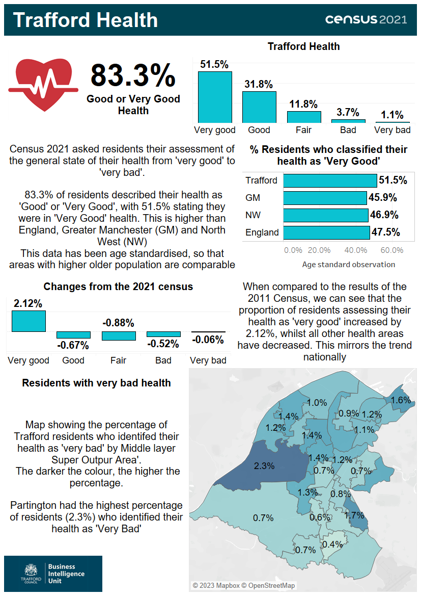

Source: Office for National Statistics.

The infographic contains statistics released on from the census taken on Sunday 21 March 2021, regarding the health of residents. The Census 2021 asked residents their assessment of the general state of their health from 'Very Good' to 'Very Bad'. 83.3% of Trafford residents described their health as 'Good' or 'Very Good', with 51.5% stating they were in 'Very Good' health, 31.8% 'Good', 11.8% 'Fair', 3.7% 'Bad' and 1.1% 'Very bad'. The proportion classifying their health as 'Very Good' (51.5%) is is higher than England (47.5%), Greater Manchester (45.9%) and North West (46.9%). This data has been age standardised so that areas with higher older population are comparable. When comparing to the results of the 2011 Census, the proportion of residents assessing their health as 'Very Good' increased by 2.12%, whilst all other health areas have decreased ('Good' -0.67%, 'Fair' -0.88%, 'Bad' -0.52% and 'Very Bad' -0.06%). This mirrors the trend nationally. When comparing areas within Trafford, Partington had the highest percentage of residents who identified their health as 'Very Bad' (2.3%) and Hale had the lowest percentage (0.4%).